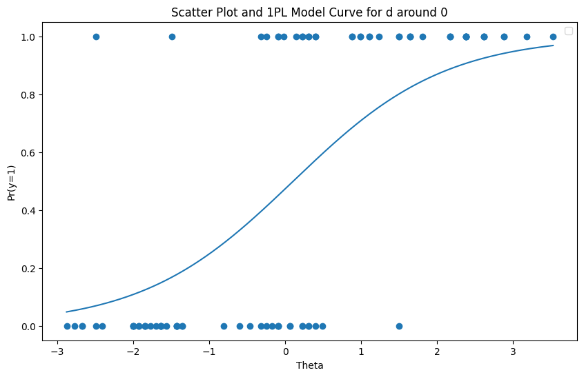
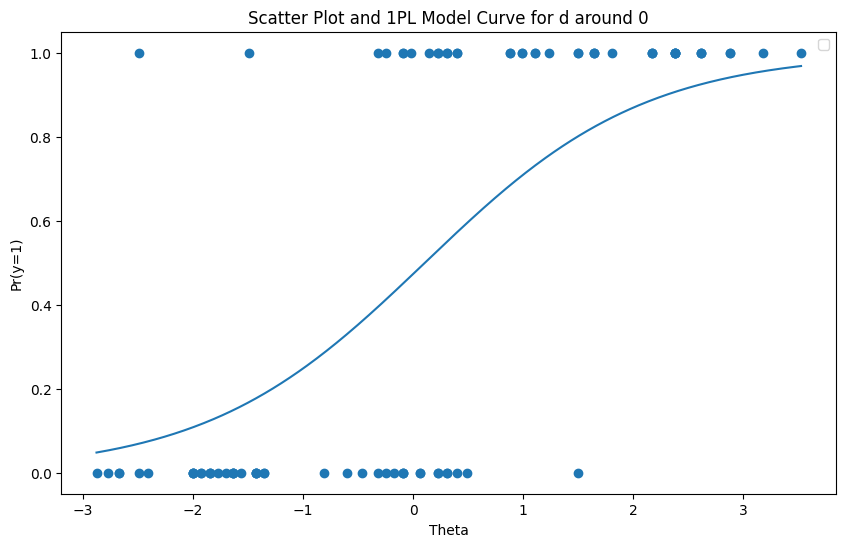

Section 1: Introduction
Sang Truong, Yuheng Tu, Percy Liang, Bo Li, Sanmi Koyejo
Table of Contents
-
Introduction
-
Related Work
-
Method
- Amortized Calibration
- Adaptive Testing with Conditional Item Generation
-
Experiment
- Amortized Calibration
- Adaptive Testing with Conditional Item Generation
-
Conclusion, Limitations, Risk, and Future Direction
1.Introduction
- Current generative model evaluations are costly and sensitive to test set selection.
- We propose an Item Response Theory (IRT) framework to ensure reliable, efficient evaluation by decoupling performance from specific test subsets.
- Key innovations:
- Amortized calibration to reduce IRT item parameter estimation costs.
- Large language model-based item generator for diverse question generation.
- Tested on 24 benchmarks and 180 models, offering a scalable, resource-efficient alternative to traditional methods.
Generative Models
- General-purpose tools with various capabilities
- Require continuous evaluation for safety and performance
- Monitoring model performance is essential before deployment
Challenges in Continuous Monitoring
- Resource intensive for large datasets
- Expensive in terms of human and computational cost
- Example: Evaluating Pythia suite models by EleutherAI is prohibitively expensive
Common practice: Use average scores across subsets
-
Issues:
-
Varies based on subset difficulty
-
Test sets are often different and not controllable
-
-
Examples:
- Web-Based Environments: A model’s previous actions can affect the difficulty of future tasks, making evaluation inconsistent.
- Healthcare Test Sets: Models are tested on different hospital datasets that can’t be shared, leading to score variability.
- Adversarial Red-Teaming: Evaluators choose harder subsets to challenge models, making average scores less reliable.
Classical Test Theory (CTT)
- CTT dates back to the 1800s
- Measures average scores across a test set
- Test-dependent ability estimation
Item Response Theory (IRT)
-
Model-Based Approach
-
Explicitly models item and test taker characteristics
-
Test-invariant ability estimation, regardless of subset
-
-
IRT Models (e.g., Rasch’s Model)
-
Probabilistic models linking ability and item characteristics
-
Decomposes ability and item difficulty, improving reliability
-

Advantages of IRT for Model Evaluation
- Ability Estimation
- Item-invariant ability estimation
- Faster adaptive testing
- Experimental Results
- Tested on 24 benchmark datasets with 505,000 questions and 184 models
- IRT reduces up to 82% of questions needed to evaluate models reliably
Technical Challenges with IRT
- Two-Phase Process
- Calibration: Item parameters for each question
- Scoring: Ability estimation during model evaluation
- Costly Calibration
- Requires large item banks and human involvement
- Regular periodic calibration needed to refresh item banks

 



Amortized Calibration
- Introduction to Amortized Calibration
- Uses machine learning to predict item parameters based on question content
- Reduces calibration cost complexity to constant with bank size
- Conditional Item Generator
- Generates questions based on difficulty levels
- Automates item bank construction for diverse, adaptive testing

Key Contributions
- Model-Based Evaluation on Large-Scale Benchmarks
- Tested on 24 NLP datasets and 180 language models from HELM
- IRT reduces query complexity by 50% on average
- Amortized Calibration
- Efficient alternative to traditional calibration
- Lower cost complexity without sacrificing accuracy
- Conditional Item Generator
- Automates creation of diverse and well-calibrated item banks
- Enhances adaptive selection during scoring phase

- Response matrix ($Y$):
- Blue = pass, Red = fail, White = missing data.
- Variables:
- $z$: question difficulty, $\theta$: test taker, $\phi$: item predictor, $\psi$: item generator.
- Arrows:
- Dashed: Learning ($\phi$, $\psi$) through amortized predictor and generator optimization.
- Solid: Forward prediction of these models.
- Calibration: Fits $z$ for adaptive testing of new models.
- Amortized network: Predicts $z$ for new questions, allowing adaptive testing without calibration.
- Item generator: Expands item bank by generating questions based on $z$.
Summary
- IRT-Based Model Evaluation
- More reliable and efficient than model-free approaches
- Solves subset dependency issue in classical evaluation
- Cost Reduction Methods
- Amortized calibration via machine learning
- Conditional item generation for efficient item bank creation
- Practical Applications
- Reliable and scalable solution for continuous model evaluation
- Applicable across various fields, such as NLP, healthcare, and education